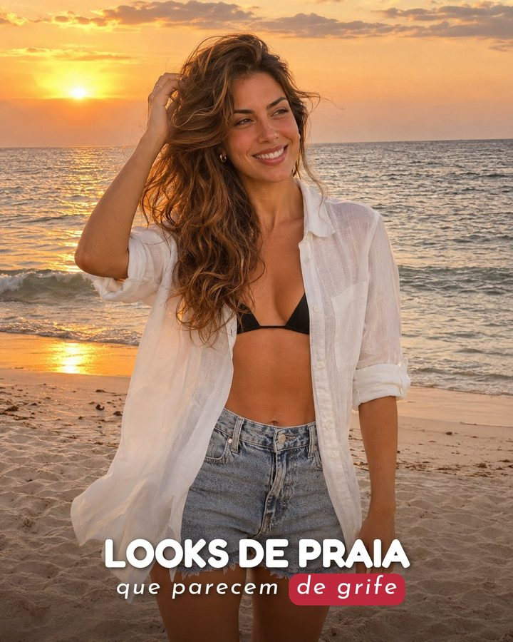
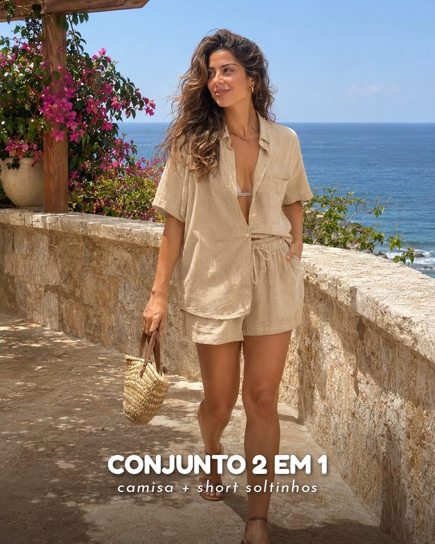
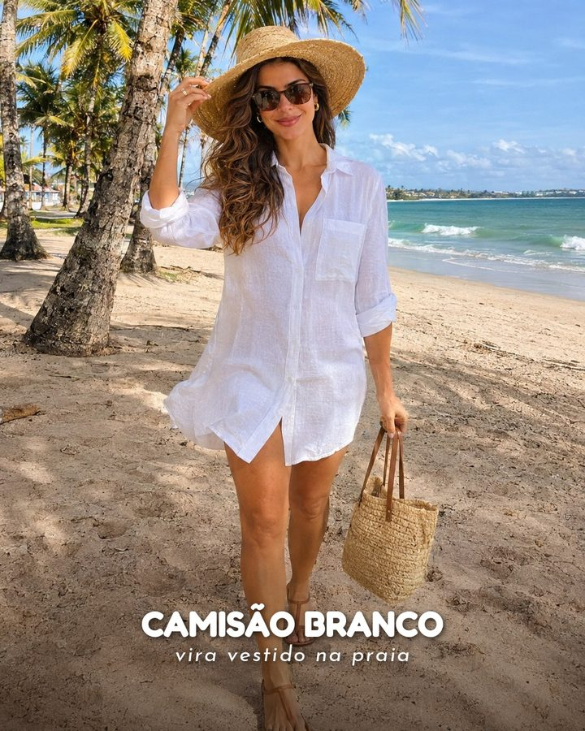
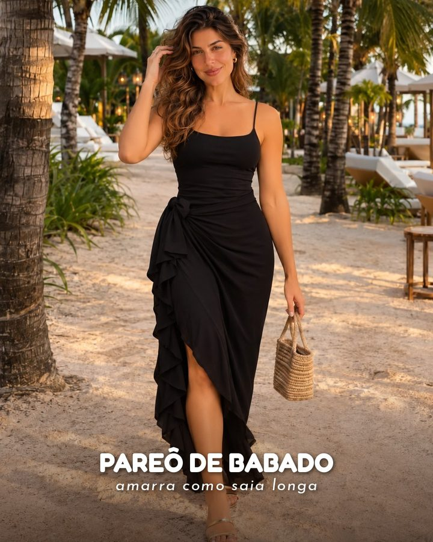
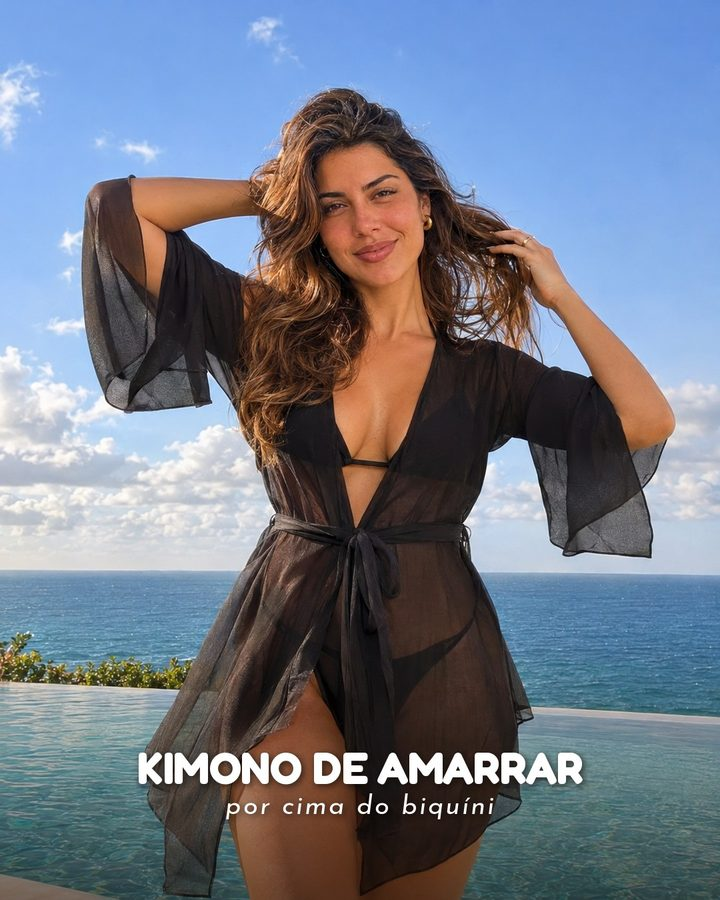
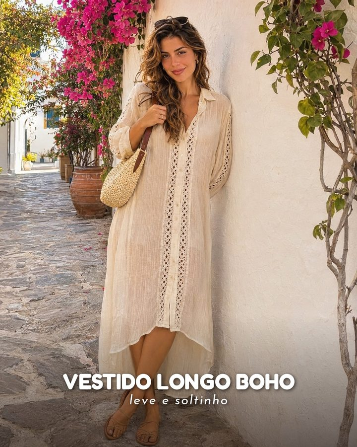
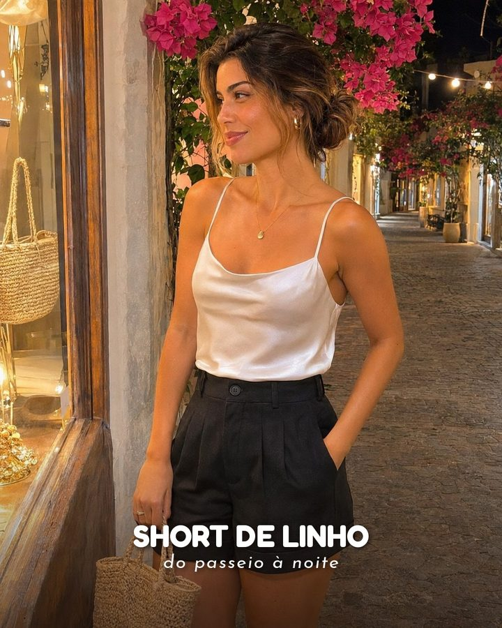

Foto 1As 6 peças
Estão uma por uma aqui embaixo, na ordem do carrossel. O camisão da capa é a peça da foto 3.
Cada foto do carrossel está aqui na mesma ordem, com o link da peça na Shopee.

Foto 1Estão uma por uma aqui embaixo, na ordem do carrossel. O camisão da capa é a peça da foto 3.

Foto 2Camisa de manga curta larga e short com elástico na cintura. 70% poliéster e 30% algodão. Tem em 12 cores, inclusive bege.
Ver o conjunto na Shopee
Foto 3Manga longa, comprido, em viscolinho. Usa aberto por cima do biquíni ou fechado como vestido. Tem em branco, preto, bege, azul-marinho e vermelho.
Ver o camisão na Shopee
Foto 4Saída de praia de amarrar, com babado. Malha fina e macia, 100% poliéster.
Ver o pareô na Shopee
Foto 5Saída de praia curta, com cinto de amarrar e mangas largas. Tecido fino e leve.
Ver o kimono na Shopee
Foto 6Leve e soltinho, em poliéster fino com leve transparência. Tamanho único.
Ver o vestido longo na Shopee
Foto 7Cintura alta, forrado, linho misto (55% viscose e 45% linho). Do PP ao G2.
Ver o short na Shopee